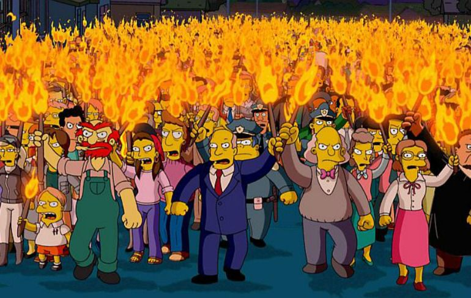

Críticas

Durante muchos años, la crítica alabó la serie Los Simpson por su ingenio, realismo e inteligencia. Sin embargo, a mediados de los 90, el tono y énfasis de la serie comenzó a cambiar. Algunos críticos empezaron a declarar que la serie estaba "desgastada". A partir de 2000, algunos de los fans más veteranos empezaron a expresar su desilusión con la serie señalando lo que ellos percibían como un exceso de situaciones estrafalarias en los argumentos, anteriormente basados en las características de los personajes. El escritor Douglas Coupland describió las críticas a la disminución de la calidad en la serie como "sandeces", afirmando "Los Simpson no ha dejado pasar una oportunidad en catorce años, con muy poca probabilidad lo hará ahora". Mike Scully, que fue showrunner desde la novena temporada a la duodécima, ha sido el objetivo de las críticas. Chris Suellentrop, de la revista Slate, escribió: «Con la permanencia de Scully, Los Simpson se convirtieron, pues, en dibujos animados. [...] Los episodios que antes se habrían terminado con Homer y Marge montando en bicicleta hacia la puesta del sol ahora se terminan con Homer disparando un dardo tranquilizante al cuello de Marge. La serie todavía es graciosa, pero ha dejado de ser conmovedora desde hace años».
En 2003, para celebrar el episodio número 300 de la serie, "Barting Over", el periódico USA Today publicó un par de artículos relacionados con Los Simpson: una lista de los 10 mejores episodios seleccionados por el webmaster del fansite The Simpsons Archive, y una lista de los 15 mejores episodios de Los Simpson según los propios guionistas. El episodio más reciente de la lista de los seguidores fue uno de 1997, "Homer's Phobia"; la elección más reciente de los guionistas fue un episodio de 2000, "Behind the Laughter". En 2004, Harry Shearer criticó lo que él percibe como un descenso en la calidad: "Creo que las tres últimas temporadas están entre lo peor, por lo que la cuarta temporada me parece bastante buena ahora".
A pesar de estas críticas, Los Simpson ha logrado mantener una buena audiencia y atraer nuevos seguidores, si bien la primera temporada fue vista por una media de 13,4 millones de espectadores por episodio en Estados Unidos, mientras que la decimoséptima temporada finalizó con una media de 9,2 millones de espectadores y la decimonovena temporada con una media de 7,7 millones. En una entrevista concedida en 2006, Matt Groening afirmó: «Sinceramente, yo no veo ningún fin a la vista. Creo que es posible que la serie llegue a ser económicamente demasiado incómoda..., pero por ahora la serie es creativamente, creo, tan buena o mejor que siempre. La animación es increíblemente detallista e imaginativa y las historias cuentan cosas que nunca antes habían ocurrido. Así que creativamente no hay razón de marcharse».